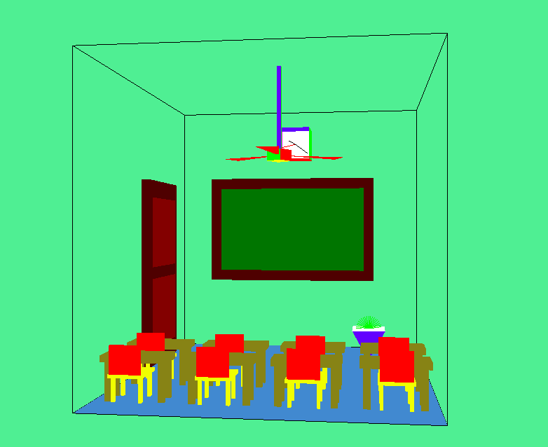
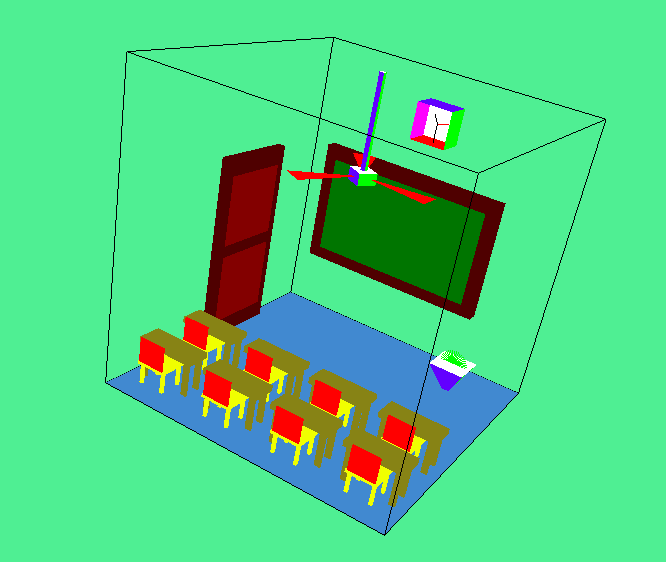
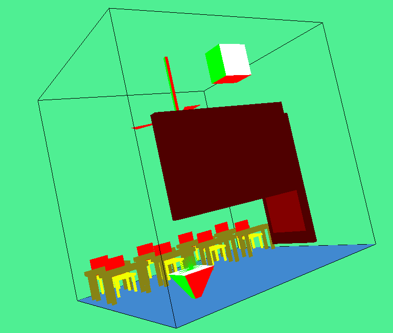
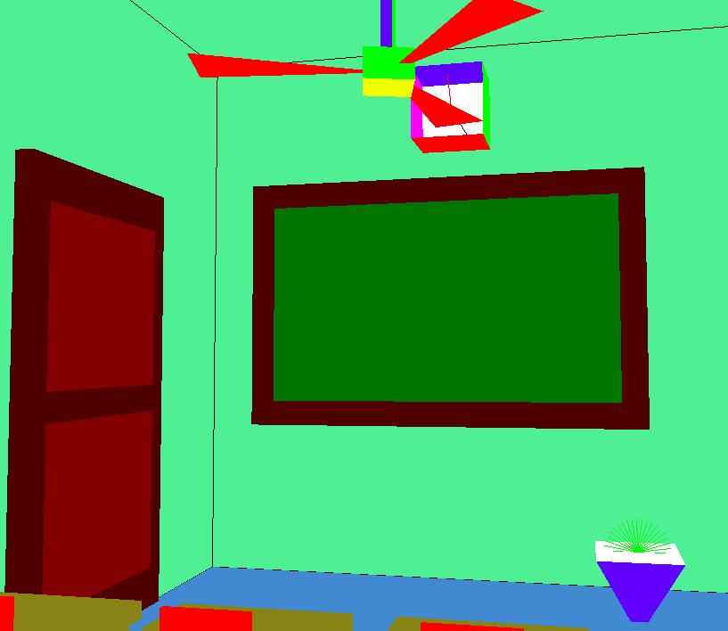
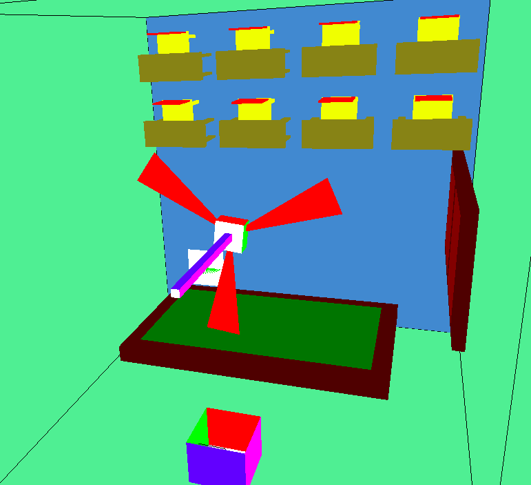

Classroom Scene
Results(Pictures and Timing):
Timing : The following range of time is needed to redraw the entire picture each time:
0.000279 to 0.0068 seconds
Vanilla View

Aerial View

Back View

Bench View

Top View

Remarks:
- Experimentation was done with different refresh rates for glutTimerFunc. We settled on 30 as it allows for movement that felt easy on the eyes.
- The time taken to draw the Scene is surprisingly less even though we redraw each object after every refresh.
- The scene was expected to take the same amount of time whenever redrawn because all the objects were redrawn every refresh. However, that wasn’t the case.
- The variance in the time might be due to the change in our view Vectors(which we’ve declared as global variables) during intermediate refreshes. When we strafe, for example, we need to recompute cross product between Direction of Sight and Up Vector. Such cases might have led to the lag in redrawing the picture.
Issues:
- We weren’t able to populate our classroom with as many objects as we wanted. We initially thought of making it a biology classroom, with a human skeleton, potted plants and other paraphernalia imported from .obj objects made in Blender. However, we decided to go with figures drawn in OpenGL in the last few days as the number of encountered problems went up.
- The potted plant was planned as an L- System tree. However, it fell out of favor much like importing obj objects.
- The colors scheme of the classroom could have been changed so as to obtain a more realistic hue.
- Camera movement restriction could have been better done. There was room for collision detection with surfaces.
- The camera movements themselves could have been more optimized. This could have been accomplished by focusing more on obtaining ideal parameters for sensitivity.
References: